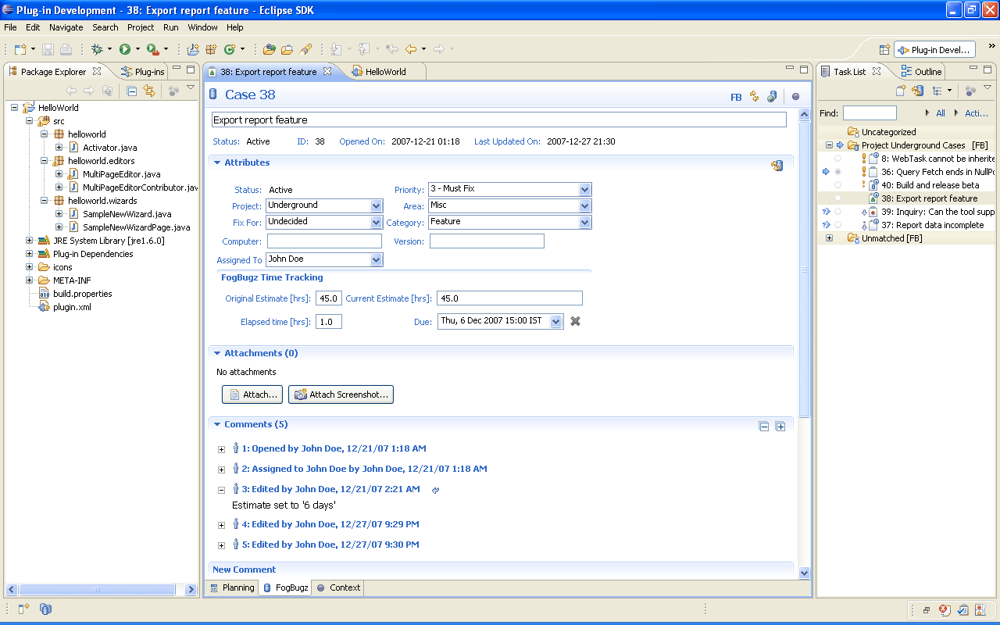

Rich Editor
- Double clicking on a task in the task list opens it up in a rich editor.
- The FogBugz tab allows the user to input values for say, title or estimate and can be saved in the editor by pressing Ctrl S
- Such outgoing changes are indicated in the task list by an outward arrow icon next to the task
- The Submit button in the FogBugz task editor submits the changed data to the FogBugz repository
- New
comments entered are committed in conjunction with the action invoked
during submit. Eg. To resolve a bug, resolution comments should be
first added in New Comment box before selecting Actions -> Resolve.
- When
a task's data is changed using the FogBugz web interface while it is
already open in the rich editor, the editor's title takes on the label
of [STALE] to indicate that the task needs to be reopened in the editor
for the change to appear correctly. Mylyn 2.2 instead shows up a
warning in the editor that the view has to be refreshed. The Attributes
section in the task editor has a button which can readily update the
attributes.
- The rich editor also
includes the Context tab (See Advanced Features -> Context
attachment) and Planning tab (See Mylyn concepts -> Planning)
- New in Mylyn 2.2: Attachments section has a facility to Attach Screenshot
